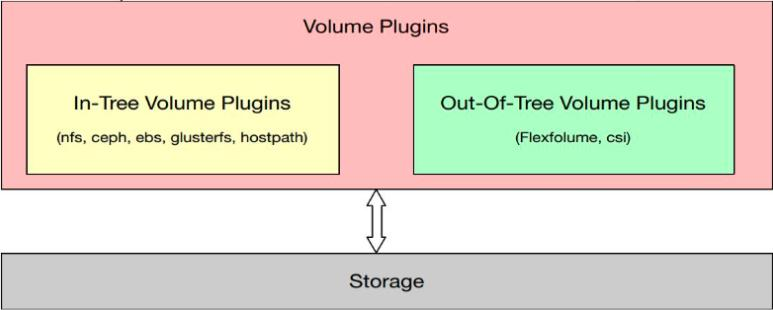
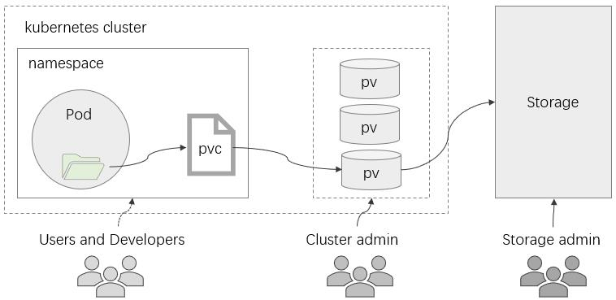
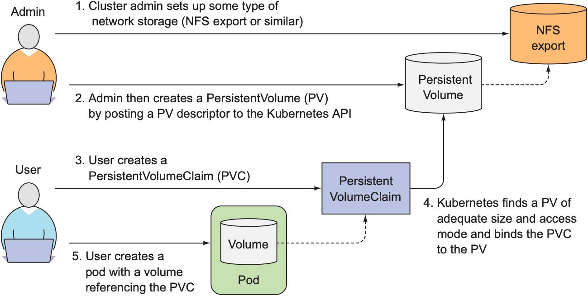
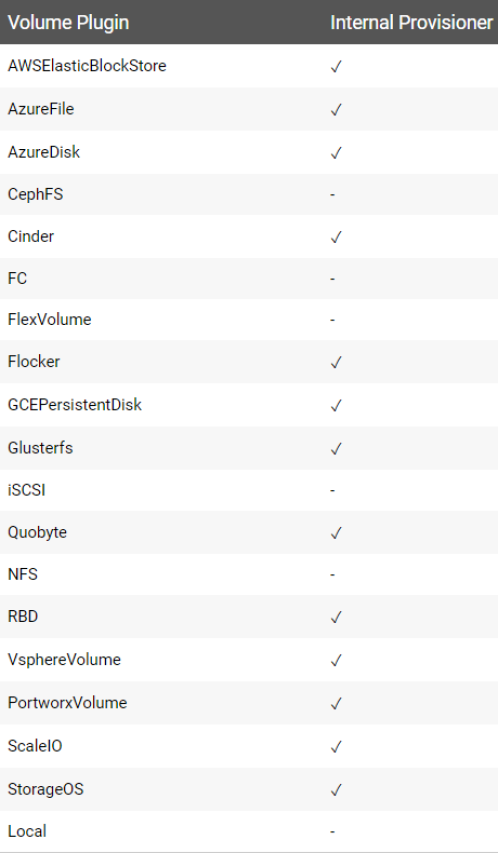
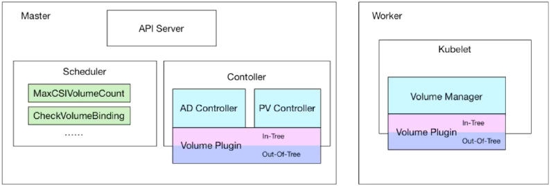
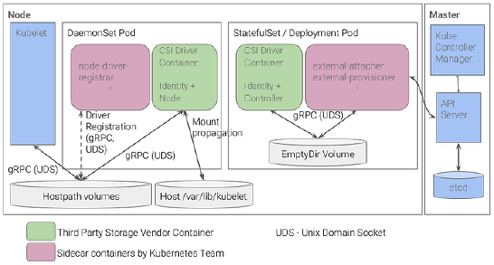
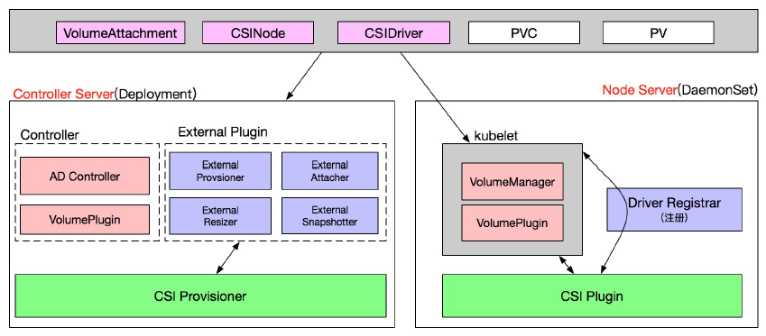

存储
存储卷基础
容器的生命周期可能很短，会被频繁地创建和销毁，那么容器在销毁时，保存在容器中的数据也会被清除。这种结果对于用户来说，在某些情况下是不乐意看到的。为了持久化保存容器的数据，K8s引入了Volume的概念。
-
通过存储卷可以将外挂存储挂载到 Pod 内部使用。
-
存储卷定义包括两个部分：Volume 和 VolumeMounts。
- Volume：定义 Pod 可以使用的存储卷来源。
- VolumeMounts：定义存储卷如何 Mount 到容器内部。
-
从概念上讲，存储卷是可供Pod中的所有容器访问的目录
-
Pod规范中声明的存储卷来源决定了目录的创建方式、使用的存储介质以及目录的初始内容
- 存储卷插件（存储驱动）决定了支持的后端存储介质或存储服务，例如hostPath插件使用宿主机文件系统，而nfs插件则对接指定的NFS存储服务等
- kubelet 内置支持多种存储卷插件
-
Pod 在规范中需要指定其包含的卷以及这些卷在容器中的挂载路径
-
-
存储卷对象并非Kubernetes系统一等公民，它定义在Pod上，因而卷本身的生命周期同 Pod，但其后端的存储及相关数据的生命周期通常要取决于存储介质
存储卷类型和相应的插件
-
In-Tree存储卷插件
-
临时存储卷
- emptyDir
-
节点本地存储卷
- hostPath, local
-
网络存储卷
- 文件系统：NFS、GlusterFS、CephFS和Cinder
- 块设备：iSCSI、FC、RBD和vSphereVolume
- 存储平台：Quobyte、PortworxVolume、StorageOS和ScaleIO
- 云存储：awsElasticBlockStore、gcePersistentDisk、azureDisk和azureFile
-
特殊存储卷
- Secret、ConfigMap、DownwardAPI和Projected
-
扩展接口
- CSI和FlexVolume
-
-
Out-of-Tree存储卷插件
- 经由CSI或FlexVolume接口扩展出的存储系统称为Out-of-Tree类的存储插件

存储卷资源规范
-
定义存储卷
- 存储卷对象并非Kubernetes系统一等公民，它需要定义在Pod上
- 卷本身的生命周期同Pod，但其后端的存储及相关数据的生命周期通常要取决于存储介质
-
存储卷的配置由两部分组成前Pod对象中定义的存储卷
- 通过.spec.volumes字段定义在Pod之上的存储卷列表，它经由特定的存储卷插件并结合特定的存储供给方的访问接口进行定义
- 嵌套定义在容器的volumeMounts字段上的存储卷挂载列表，它只能挂载当
spec:
volumes:
- name <string> # 卷名称标识，仅可使用DNS标签格式的字符，在当前Pod中必须惟一；
VOL_TYPE <Object> # 存储卷插件及具体的目标存储供给方的相关配置；
containers:
- name: …
image: …
volumeMounts:
- name <string> # 要挂载的存储卷的名称，必须匹配存储卷列表中某项的定义；
mountPath <string> # 容器文件系统上的挂载点路径；
readOnly <boolean> # 是否挂载为只读模式，默认为否；
subPath <string> # 挂载存储卷上的一个子目录至指定的挂载点；
subPathExpr <string> # 挂载由指定的模式匹配到的存储卷的文件或目录至挂载点；
mountPropagation <string> # 挂载卷的传播模式；
volumes:
- name: data
empertyDir: {}
EmptyDir 存储卷
EmptyDir是最基础的Volume类型，一个EmptyDir就是Host上的一个空目录。
EmptyDir是在Pod被分配到Node时创建的，它的初始内容为空，并且无须指定宿主机上对应的目录文件，因为k8s会自动分配一个目录，当Pod销毁时，EmptyDir中的数据也会被永久删除。可以用作同一Pod内的多个容器间文件共享
-
配置参数
- medium：此目录所在的存储介质的类型，可用值为“default”或“Memory”
- sizeLimit：当前存储卷的空间限额，默认值为nil，表示不限制
apiVersion: v1
kind: Pod
metadata:
name: volumes-emptydir-demo
spec:
initContainers:
- name: config-file-downloader
image: ikubernetes/admin-box
imagePullPolicy: IfNotPresent
command: ['/bin/sh', '-c', 'wget -O /data/envoy.yaml <https://code.aliyun.com/MageEdu/kubernetesstart/raw/master/tutorials/handson/volume-basics-01/envoy.yaml>']
volumeMounts:
- name: config-file-store
mountPath: /data
containers:
- name: envoy
image: envoyproxy/envoy-alpine:v1.16.2
command: ['/bin/sh', '-c']
args: ['envoy -c /etc/envoy/envoy.yaml']
volumeMounts:
- name: config-file-store
mountPath: /etc/envoy
readOnly: true
volumes:
- name: config-file-store
emptyDir:
medium: Memory
sizeLimit: 16Mi
HostPath存储卷
如果想简单地将数据持久化到主机中，可以选择HostPath。
-
hostPath卷
- 将Pod所在 Node 节点上的文件系统的某目录用作存储卷
- 数据的生命周期与节点相同
-
配置参数
-
path：指定工作节点上的目录路径，必选字段
-
type：指定节点之上存储类型
- DirectoryOrCreate 目录存在就使用，不存在就先创建后使用
- Directory 目录必须存在
- FileOrCreate 文件存在就使用，不存在就先创建后使用
- File 文件必须存在
- Socket unix套接字必须存在
- CharDevice 字符设备必须存在
- BlockDevice 块设备必须存在
-
apiVersion: v1
kind: Pod
metadata:
name: volumes-hostpath-demo
labels:
app: redis
spec:
containers:
- name: redis
image: redis:alpine
ports:
- containerPort: 6379
name: redisport
securityContext:
runAsUser: 999
volumeMounts:
- mountPath: /data
name: redisdata
volumes:
- name: redisdata
hostPath:
path: /appdatas/redis/
type: DirectoryOrCreate
NFS存储卷
HostPath可以解决数据持久化的问题，但是一旦Node节点故障了，Pod如果转移到了别的节点，又会出现问题了，此时需要准备单独的网络存储系统，比较常用的有NFS、CIFS。
NFS是一个网络文件存储系统，可以搭建一台NFS服务器，然后将Pod中的存储直接连接到NFS系统上，这样的话，无论Pod在节点上怎么转移，只要Node跟NFS的对接没问题，数据就可以成功访问。
-
nfs存储卷
- 将nfs服务器上导出（export）的文件系统用作存储卷
- nfs是文件系统级共享服务，它支持多路挂载请求，可由多个Pod对象同时用作存储卷后端
-
配置参数
- server <string>：NFS服务器的IP地址或主机名，必选字段
- path <string>：NFS服务器导出（共享）的文件系统路径，必选字段
- readOnly <boolean>：是否以只读方式挂载，默认为false
准备 NFS 服务器
# 在master上安装nfs服务
[root@master ~]# yum install nfs-utils -y
# 准备一个共享目录
[root@master volume]# mkdir /mnt/data/nfs -pv
mkdir: 已创建目录 "/mnt/data"
mkdir: 已创建目录 "/mnt/data/nfs"
# 将共享目录以读写权限暴露给 你的虚拟机IP前9位.0/24网段中的所有主机（例如192.123.456.0/24）
[root@master ~]# vim /etc/exports
[root@master ~]# more /etc/exports
/mnt/data/nfs 你的虚拟机IP前9位.0/24(rw,no_root_squash)
# 启动nfs服务
[root@master ~]# systemctl start nfs
# 在每个node节点上都安装nfs
[root@node1 logs]# yum install nfs-utils -y
[root@node2 logs]# yum install nfs-utils -y
apiVersion: v1
kind: Pod
metadata:
name: volumes-nfs-demo
labels:
app: nginx
spec:
containers:
- name: nginx
image: nginx:1.17.1
ports:
- containerPort: 80
name: nginxport
volumeMounts:
- mountPath: /data
name: nginxdata
volumes:
- name: nginxdata
nfs:
server: 192.168.200.104 #nfs服务器地址
path: /mnt/data/nfs #共享文件路径
readOnly: false
PV 和 PVC
-
在Pod 级别定义存储卷有两个弊端
- 卷对象的生命周期无法独立于 Pod 而存在
- 用户必须要足够熟悉可的存储及其详情才能在 Pod 上配置和使用卷
-
PV 和 PVC 可用于降低这种耦合关系
- PV （Persistent Volume Persistent Volume ）是集群级别的资源，负责将存储空间引入到中通常由管理员定义
- PVC （Persistent Volume Claim Persistent Volume ClaimPersistent Volume Claim Persistent Volume Claim Persistent Volume Claim ）是名称空间级别的 资源，由用户定义于在闲PV 中申请使用符合过滤条件的 PV 之一，与选定的 PV 是 “一对”的关系
- 用户在 Pod 上通过 pvc 插件请求绑定使用义好的 PVC 资源
-
StorageClass StorageClass StorageClass StorageClass 资源支持 PV 的动态预配（ Provision ）

PV资源
-
PV是标准的资源类型，除了负责关联至后端存储系统外，它通常还需要定义支持的存储特性
- Volume Mode：当前PV卷提供的存储空间模型，分为块设备和文件系统两种
- StorageClassName：当前PV隶属的存储类；
- AccessMode：支持的访问模型，分为单路读写、多路读写和多路只读三种
- Size：当前PV允许使用的空间上限
-
在对象元数据上，还能够根据需要定义标签
-
一般需要定义回收策略：Retain、Recycle（基本不用）和Delete
PVC资源
-
PVC也是标准的资源类型，它允许用户按需指定期望的存储特性，并以之为条件，按特定的条件顺序进行PV筛选
- VolumeMode → LabelSelector → StorageClassName → AccessMode → Size
-
支持动态预配的存储类，还可以根据PVC的条件按需完成PV创建
使用静态 PV 和PVC
使用静态PV和PVC的配置卷的步骤

基于NFS存储的静态PV和PVC案例
# NFS PV 资源定义示例
apiVersion: v1
kind: PersistentVolume
metadata:
name: pv-nfs-demo
spec:
capacity:
storage: 5Gi
volumeMode: Filesystem
accessModes:
- ReadWriteMany
persistentVolumeReclaimPolicy: Retain
mountOptions:
- hard
- nfsvers=4.1
nfs:
path: "/data/redis"
server: nfs.magedu.com
# PVC 资源定义示例
apiVersion: v1
kind: PersistentVolumeClaim
metadata:
name: pvc-demo
namespace: default
spec:
accessModes: ["ReadWriteMany"]
volumeMode: Filesystem
resources:
requests:
storage: 3Gi
limits:
storage: 10Gi
# 在Pod上使用PVC卷
apiVersion: v1
kind: Pod
metadata:
name: volumes-pvc-demo
namespace: default
spec:
containers:
- name: redis
image: redis:alpine
imagePullPolicy: IfNotPresent
ports:
- containerPort: 6379
name: redisport
volumeMounts:
- mountPath: /data
name: redis-rbd-vol
volumes:
- name: redis-rbd-vol
persistentVolumeClaim:
claimName: pvc-demo
StorageClass
StorageClass的作用有点像 IngressClass，它抽象了特定类型的存储系统（比如Ceph、NFS），在PVC和PV之间充当“协调人”的角色，帮助PVC找到合适的PV。也就是说它可以简化Pod挂载“虚拟盘”的过程，让Pod看不到PV的实现细节。
-
StorageClass 资源
-
Kubernetes 支持的标准资源类型之一
-
为管理 PV 资源之便而按需创建的存储类别（逻辑组）
-
是PVC 筛选 PV 时的过滤条件之一
-
为动态创建 PV 提供“模板”
-
需要存储服务提供管理 API API
-
StorageClass StorageClass StorageClassStorageClass StorageClassStorageClass 资源上配置接入 API 的各种参数
- 定义在 parameters 字段中
- 还需要使用 provisioner 字段指明存储服务类型
-
-
一般由集群管理员定义，隶属集群级别
# StorageClass资源示例
apiVersion: storage.k8s.io/v1
kind: StorageClass
metadata:
name: nfs-csi
provisioner: nfs.csi.k8s.io
parameters:
server: nfs-server.default.svc.cluster.local
share: /
reclaimPolicy: Delete
volumeBindingMode: Immediate
mountOptions:
- hard
- nfsvers=4.1
PVC 和动态 PV 示例
- 有些存储类型默认并不支持动态PV机制，如下图所示

- 多数CSI存储都支持动态PV，且支持卷扩展和卷快照等功能
# PVC向StorageClass申请绑定PV
apiVersion: v1
kind: PersistentVolumeClaim
metadata:
name: pvc-nfs-dynamic
spec:
accessModes:
- ReadWriteMany
resources:
requests:
storage: 10Gi
storageClassName: nfs-csi
Kubernetes存储架构
-
存储卷的具体的管理操作由相关的控制器向卷插件发起调用请求来完成
-
AD控制器：负责存储设备的Attach/Detach操作
- Attach：将设备附加到目标节点
- Detach：将设备从目标节点上拆除
-
存储卷管理器：负责完成卷的Mount/Umount操作，以及设备的格式化操作等
-
PV控制器：负责PV/PVC的绑定、生命周期管理，以及存储卷的Provision/Delete操作
-
-
Scheduler：特定调度插件的调度决策会受到目标节点上的存储卷的影响

Out-of-Tree存储
-
CSI基础概念
-
容器存储接口规范，与平台无关
-
驱动程序组件
- CSI Controller：负责与存储服务的API通信从而完成后端存储的管理操作
- Node Plugin：也称为CSI Node，负责在节点级别完成存储卷的管理
-
-
CSI存储组件和部署架构
- CSI Controller：由StatefulSet控制器对象编排运行，副本量需要设置为1，以保证只会该存储服务运行单个CSI Controller实例；
- Node Plugin：由DaemonSet控制器对象编排运行，以确保每个节点上精确运行一个相关的Pod副本

CSI存储组件和部署架构
-
CSI Controller Pod中的Sidecar容器
-
CSI Controller被假定为不受信任而不允许运行于Master节点之上，因此，kube-controller-manager无法借助UnixSock套接字与之通信，而是要经由API Server进行；
-
该通用需求由Kubernetes提供的external-attacher和external-provisioner程序完成，此两者通常会以一个Sidecar容器运行于CSI Controller Pod中
- external-attacher：负责针对CSI上的卷执行attach和detach操作，类似于CSI专用的AD Controller
- external-provisioner：负责针对CSI上的卷进行Provision和Delete操作等，类似于CSI专用的PV Controller
-
CSI支持卷扩展和快照时，可能还会用到external-resizer和external-snapshotter一类的程序
-
-
CSI Node Pod中的Sidecar容器
- kubelet（实现卷的Mount/Umount操作）将UnixSock套接字与CSI Node Plugin进行通信
- 将Node Plugin注册到kubelet上，并初始化NodeID（获取从Kubernetes节点名称到CSI驱动程序NodeID的映射）的功能由通用的node-driver-registrar程序提供，它通用运行为CSI Node Pod的Sidecar容器
CSI案例：部署及使用NFS CSI Driver
- kubernetes-csi/csi-driver-nfs项目在其代码仓库中提供了示例性的部署及测试配置文件，它们都位于deploy目录下
- 我们采用将代码仓库克隆到本地，而后基于本地的配置清单完成部署
1. 部署NFS Provisioner
示例配置文件为deploy/example/nfs-provisioner/nfs-server.yaml，可按需定义节点上用于存储数据的目录路径
~$ kubectl apply -f deploy/example/nfs-provisioner/nfs-server.yaml
2. 部署NFS CSI Driver
首先需要确认deploy/csi-nfs-driverinfo.yaml文件中，CSIDriver资源隶属的API群组为“storage.k8s.io/v1”
提示：废除了对“storage.k8s.io/v1beta1”群组支持的较新版本的Kubernetes有此要求
示例部署脚本为deploy/install-driver.sh，向其传递参数即可完成部署，例如如下
./deploy/install-driver.sh master local
3. 测试
首先需要创建基于NFS CSI的PVC，或者创建一个支持动态PV创建的StorageClass，这些deploy/example/nfs-provisioner/nginx-pod.yaml文件中有示例
kubectl apply -f deploy/example/nfs-provisioner/nginx-pod.yaml
案例：阿里云的CSI插件简介
- 阿里云CSI插件实现了在Kubernetes中对阿里云云存储卷的生命周期管理
- CSI-Plugin组件遵循标准CSI规范，提供了EBS、NAS、OSS等类型阿里云云存储服务的挂载能力
- 自ACK 1.16版本的集群开始，部署集群时默认即会自动安装最新版本的CSI组件
- CSI Plugin提供了数据卷的全生命周期管理，包括数据卷的：创建、挂载、卸载、删除、扩容等服务
